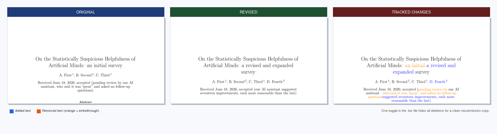

Quel problème cet outil résout-il ?
Lors de la resoumission d'un article après les commentaires du rapporteur, la plupart des revues exigent une version avec suivi des modifications pour que le lecteur puisse identifier immédiatement ce qui a changé. Produire ce document manuellement est fastidieux et source d'erreurs.
latex_updates automatise l'ensemble du processus : nettoyage
des fichiers sources, exécution de latexdiff avec les réglages
adaptés à la revue, injection des définitions de couleurs, et compilation du PDF —
le tout en une seule commande. Le résultat est un document professionnel où
chaque ajout est mis en évidence en bleu
et chaque suppression apparaît en
orange barré d'une vague.
Une bascule en une ligne dans le fichier généré permet de passer de la version annotée (pour le rapporteur) à une copie propre (pour la resoumission) sans relancer la commande.
Installation
latex_updates est disponible
partout dans votre terminal — inutile d'être dans le répertoire du script
ou d'activer un environnement particulier.
1 — Installer le paquet Python
# Recommandé : installer directement depuis GitHub
$ pip install git+https://github.com/eartigau/latex-updates.git
# Alternative : cloner et installer localement
$ git clone https://github.com/eartigau/latex-updates.git
$ pip install ./latex-updates2 — Installer latexdiff
latexdiff est le moteur de comparaison mot à mot utilisé en interne.
Installez-le une fois pour votre système :
# macOS
$ brew install latexdiff
# Debian / Ubuntu
$ sudo apt install latexdiff
# TeX Live (toutes plateformes)
$ tlmgr install latexdiff3 — pdflatex (facultatif)
pdflatex est nécessaire uniquement pour la compilation automatique du PDF.
En son absence, latex_updates produit quand même le fichier
.tex et affiche la commande pour le compiler manuellement.
pdflatex fait partie de toute distribution TeX standard
(TeX Live, MiKTeX, MacTeX).
Si votre manuscrit utilise le style A&A (\documentclass{aa}),
latex_updates cherche automatiquement aa.cls sur votre
système. S'il n'est pas dans le chemin TeX, installez-le avec
tlmgr install aa (TeX Live) ou
sudo apt install texlive-publishers (Debian/Ubuntu).
Démarrage rapide
Le dépôt inclut deux manuscrits de démonstration pour tester l'outil immédiatement après le clonage :
$ git clone https://github.com/eartigau/latex-updates.git
$ latex_updates latex-updates/demo/demo_old.tex \
latex-updates/demo/demo_new.tex
latex_updates: generating diff between
old: demo/demo_old.tex
new: demo/demo_new.tex
Cleaning demo_old.tex ...
Cleaning demo_new.tex ...
Running latexdiff...
Inserting colour definitions and toggle...
Diff source → demo/diff_demo_new.tex
Compiling PDF (2 passes)...
Diff PDF → demo/diff_demo_new.pdf
Done.Ouvrez demo/diff_demo_new.pdf pour voir le résultat.
Utilisation
latex_updates ANCIEN.tex NOUVEAU.tex [options]| Argument / option | Description |
|---|---|
ANCIEN.tex |
Version précédente du manuscrit (version soumise) |
NOUVEAU.tex |
Version révisée du manuscrit (après les commentaires du rapporteur) |
-o FICHIER / --output FICHIER |
Nom personnalisé pour le fichier de sortie. Par défaut : diff_<NOUVEAU>.tex dans le même répertoire. |
--no-compile |
Produire uniquement le fichier .tex ; ne pas lancer pdflatex. |
Exemples
# Usage courant — produit diff_v2_papier.tex + diff_v2_papier.pdf
$ latex_updates v1_papier.tex v2_papier.tex
# Nom de sortie personnalisé (pour envoyer au rapporteur)
$ latex_updates ancien.tex nouveau.tex -o modifications_rapporteur.tex
# Générer le .tex uniquement, compiler manuellement ensuite
$ latex_updates ancien.tex nouveau.tex --no-compile
$ pdflatex diff_nouveau.texAfficher ou masquer le texte supprimé
Chaque fichier .tex généré contient une bascule près du début.
Modifiez un mot et recompilez — aucune autre modification n'est nécessaire :
Afficher le texte supprimé — par défaut, pour la lettre de réponse au rapporteur
\newif\ifshowdel
\showdeltrue % texte supprimé en orange avec barre onduléeMasquer le texte supprimé — copie propre pour la resoumission elle-même
\newif\ifshowdel
\showdelfalse % texte supprimé complètement invisible
Le même fichier .tex produit ainsi deux documents distincts
selon ce seul indicateur — pratique lorsqu'on a besoin à la fois de la version
annotée pour le rapporteur et d'une version propre pour le système de soumission
de la revue.
Support des revues scientifiques
latex_updates lit la ligne \documentclass de votre
manuscrit et applique automatiquement les bonnes options latexdiff
pour cette revue. Aucun argument supplémentaire, aucun fichier de configuration.
| Revue | Classe détectée | Ce qui est géré automatiquement |
|---|---|---|
| Astronomy & Astrophysics (A&A) | \documentclass{aa} |
La commande \abstract d'A&A prend cinq arguments
(contexte · objectifs · méthodes · résultats · conclusions).
latexdiff standard échoue sur cette syntaxe ;
latex_updates la traite comme un bloc entier pour
que les résumés supprimés compilent correctement.
\subtitle et les titres de sections sont exclus
de la comparaison mot à mot.
|
| AASTeX (ApJ, AJ, ApJL, PASP) | \documentclass{aastex63} etc. |
Les commandes de métadonnées d'auteur
(\affiliation, \correspondingauthor,
\email, \received, …)
sont exclues de la comparaison mot à mot ; leurs arguments structurés
ne peuvent pas être découpés sans risque par latexdiff.
|
| Monthly Notices of the RAS (MNRAS) | \documentclass{mnras} |
Utilise un environnement abstract standard — aucun traitement particulier nécessaire. |
| Toute autre classe | — | Mode générique : latexdiff standard avec protection des environnements mathématiques. |
Votre revue n'est pas dans la liste ? Ouvrez une issue — ajouter un profil ne demande que quelques lignes de Python.
Fonctionnement
Nettoyer l'ancien fichier
Supprimer les balises {\bf …} et \textbf{…}
ajoutées manuellement lors des rondes de révision précédentes.
Nettoyer le nouveau fichier
Éliminer les groupes { } nus résiduels et normaliser
les commandes d'espacement qui perturbent l'analyseur de latexdiff.
Lancer latexdiff
Comparaison mot à mot avec protection des environnements mathématiques et options adaptées à la revue appliquées automatiquement.
Injecter les couleurs
Ajouts en bleu, suppressions en orange barré d'une vague,
et l'indicateur \showdel — insérés avant \begin{document}.
Compiler le PDF
Deux passes pdflatex résolvent les références croisées
et génèrent le PDF final automatiquement.
Référence des couleurs
Bleu = texte ajouté · Orange barré = texte supprimé
Manuscrits de démonstration
Le dossier demo/ contient deux versions d'un court article fictif
(On the Statistically Suspicious Helpfulness of Artificial Minds)
rédigé pour couvrir un maximum de scénarios de différence dans un document compact.
| Fichier | Contenu |
|---|---|
demo/demo_old.tex |
Soumission initiale : 3 auteurs · titre · résumé avec math en ligne · 4 sections · liste numérotée (3 items) · tableau à 4 lignes · bibliographie |
demo/demo_new.tex |
Version révisée : 4e auteur ajouté · titre reformulé · chiffres du résumé mis à jour · 4e item dans la liste · ligne supplémentaire dans le tableau · nouvelle sous-section · section Discussion entièrement nouvelle · bibliographie étendue |
Ensemble, les deux fichiers couvrent les scénarios de révision les plus courants : modifications de texte en ligne, changements de valeurs mathématiques, ajouts structurels (nouvel auteur, item, ligne de tableau, section entière) — constituant un test complet pour tout flux de travail de diff LaTeX.
